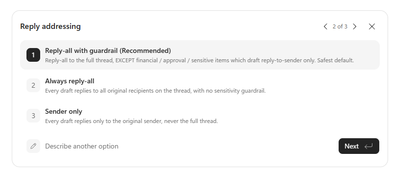
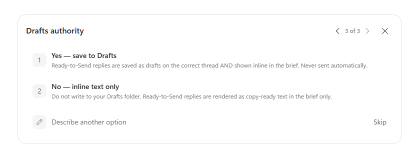
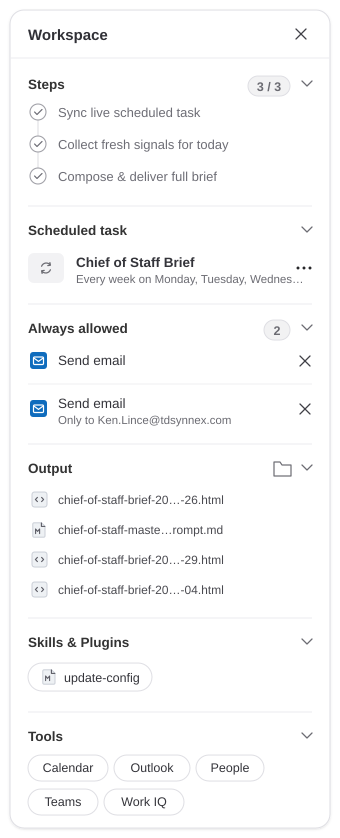
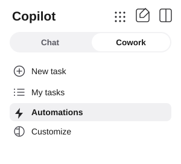
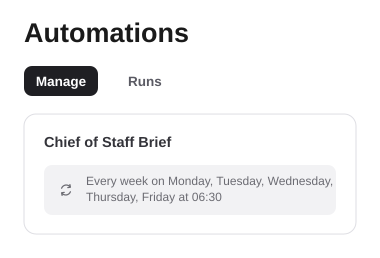

Setup time: About 5 minutes
Required: One prompt
Model: Latest Claude Opus
Default schedule: Weekdays at 6:30 AM
Delivery: Teams self-chat + Outlook inbox
What This Does
The Chief of Staff Brief is an automated Cowork agent for Microsoft 365. Once it is set up, it runs every weekday morning, reads your own work signals, and sends you one private morning brief in Teams self-chat and Outlook email.
Think of it as a chief of staff who gets in before you, checks calendar, email, Teams, recent documents, commitments, people signals, and travel details, then leaves a decision-ready summary that says: what needs a decision today, what might break, what to delegate, and what risk is forming.
| Brief section | What it gives you |
|---|
| The Bottom Line | A short executive summary: the most important decision, the biggest likely failure point, and the main risk forming. |
| Hot Signals | Urgent items only: same-day deadlines, leadership asks, missing travel bookings, escalations, and overdue approvals. |
| Decision Docket | A table of yes/no, approve/decline, or sign-off decisions waiting on you, oldest first. |
| Ready to Send | One to three complete reply drafts for the clearest asks waiting on you. Drafts can be saved to Outlook Drafts, but are never sent automatically. |
| Top 3 Priorities | Your highest-leverage items for the day, tagged as lead, delegate, decide, respond, or deep-work depending on your role. |
| Today's Schedule | Your meetings, prep notes, focus-time suggestions, and walk-in-ready intelligence for the highest-stakes meeting. |
| Travel Radar | Only appears when travel is coming. It checks flights, hotel, ground, venue, agenda, conflicts, weather, and uncovered lodging nights. |
| Promise Tracker | Things you said you would do in recent messages, including who is waiting and whether the commitment is overdue. |
| Delegation and People Radar | For managers, it highlights direct-report signals, quiet stakeholders, PTO/OOO visibility, birthdays, anniversaries, and stale 1:1s. |
| Watchlist Pulse | Movement on your priority topics, projects, customers, certifications, deadlines, or other themes you choose to track. |
It skips empty sections. Quiet day with no travel, no direct reports, and no watchlist movement? Those sections are left out so the brief stays useful and short.
How It Works
The setup prompt creates a recurring Cowork task named Chief of Staff Brief. Each scheduled run starts fresh, reads the Microsoft 365 data it is allowed to access, and then delivers the same HTML brief to your Teams self-chat and your Outlook inbox.
The agent runs in stages. On heavier days, one collector reads calendar, focus time, and travel while another reads inbox, Teams, docs, tasks, people signals, and commitments. A final composer receives compact digests from those collectors and writes the brief. On quiet days, it uses a lighter pass to keep the run smaller.
You stay in control. The agent does not send replies to other people, accept meetings, share files, post to channels, or change normal calendar events. It delivers the brief to you only.
Two narrow write permissions
By default, the agent is read-first. It has only two narrow places where it may write, and both are designed to keep you in control:
| Write action | What happens | What never happens |
|---|
| Outlook draft replies | It can save ready-to-send replies in your Outlook Drafts folder and also show the text inside the brief. | It never sends the reply. You review, edit, and send it yourself. |
| Travel ticklers | For confirmed flights within 7 days, it can create small free/busy calendar reminders with flight details. | It never books focus time, accepts meetings, moves meetings, or creates non-travel events. |
Built To Spend Carefully
Because Copilot Cowork bills on consumption, this agent is tuned to spend like a smart operator rather than run flat-out every day. The core move is effort tiering: on a normal, no-travel weekday it runs LIGHT - a single read-only pass scoped to today, the next three working days, and a 72-hour inbox window. It reserves the full two-collector, 30-day sweep with the four-pass travel build and weather lookups for days that warrant it: Mondays, Fridays, travel in the next 14 days, or any real signal that trips.
The architecture compounds the savings. Collectors hand the composer compact digests instead of raw data, so the expensive reasoning context stays small, and the composer does not re-pull source data unless a gap blocks the brief. The prompt is also aggressively conditional: it omits empty sections, skips Delegation Pulse for users with no direct reports, drops Travel Radar when there is no trip, and stays quiet on watchlist topics with no movement.
What this means for users: quiet days should stay lightweight, while travel weeks, decision-heavy Mondays, and risk-heavy days still get the full treatment.
Before You Start
- Copilot Cowork access - open Cowork in Teams or at m365.cloud.microsoft.
- Microsoft 365 Copilot license - Cowork needs permissioned access to your Microsoft 365 work signals.
- Latest Claude Opus model - before pasting the prompt, use the model dropdown in the top-right corner and select the latest available Claude Opus model.
- Five quiet minutes - Cowork may ask a few setup questions and show permission cards. Answer them during setup so scheduled runs do not stall later.
Important first step: Select the latest Claude Opus model before you paste the prompt. The prompt is long and asks Cowork to reason across several Microsoft 365 sources.
Step-by-Step Setup
What you are about to do
You will paste one full setup prompt into a fresh Cowork chat. Cowork will create the scheduled task, ask the few questions it cannot safely infer, request needed permissions, and then show the task as active.
Start a fresh new chat. Do not paste the setup prompt inside an unrelated conversation.
Use the model dropdown in the top-right corner to select the latest Claude Opus model.
Scroll to the
Full Prompt section below and click
Copy.
Paste the full prompt into Cowork and send it. Do not shorten the prompt or remove sections.
Answer the setup questions. Most users should accept the default weekday 6:30 AM schedule, Teams self-chat plus Outlook email delivery, reply-all with guardrail, and Outlook Drafts enabled.
Approve the permission cards Cowork presents. These may include creating the scheduled task, posting the brief to your Teams self-chat, emailing the brief to yourself, saving drafts, and creating confirmed-flight travel ticklers.
Wait for Cowork to confirm the task was scheduled. The setup is done when the Workspace or Details panel shows Chief of Staff Brief with Active turned on.
Check your Teams self-chat and Outlook inbox. Cowork may run once immediately so you can confirm the brief delivers correctly.
Send one follow-up message in the
same chat that names your exact delivery time and days, using the
Schedule Confirmation Prompt below. Do this even if you already answered a default-time setup question - it removes any ambiguity about when the recurring task should fire.
Open the Automations icon in the Cowork sidebar, select Manage, and confirm Chief of Staff Brief is listed with the correct days and time and the Active toggle turned on. This is the final proof the schedule is really wired up.
If Cowork asks questions, that is expected. The prompt is one paste, but Cowork still needs your setup answers and permission approvals so future runs can happen unattended.
Setup Questions and Permissions
During setup, Cowork may show multiple-choice cards. These are not error messages. They are confirmation steps that make sure the agent only does what you want it to do.
| Question | Recommended answer | Why it matters |
|---|
| Additional VIPs | List extra names, or say "none". | Your manager, leadership chain, same-manager peers, and top collaborators are already weighted up. This only adds extra people. |
| Reply addressing | Choose Reply-all with guardrail. | Drafts reply to the thread by default, but financial, approval, or sensitive items draft to the sender only. |
| Drafts authority | Choose Yes - save to Drafts. | The agent can place ready-to-send replies in Outlook Drafts, but never sends them. |
| Delivery | Teams self-chat and Outlook email, to me only. | Keeps the brief private and easy to find. |
| End-of-day wrap | Leave off unless you want a second daily brief. | It creates another scheduled task and can roughly double daily usage. |
Example setup card - reply addressing

Example setup card - Outlook Drafts authority

Important permission detail: Saving a reply to Outlook Drafts is not the same as sending it. The agent creates drafts for your review. You still open the draft, check the recipients and wording, and decide whether to send it.
What Success Looks Like
When setup is complete, the Cowork Workspace panel should show a scheduled item named Chief of Staff Brief with the Active toggle turned on. You should also see completed plan steps, allowed actions, and output or reference items attached.
Based on the current setup, the schedule should read like this: every week on Monday, Tuesday, Wednesday, Thursday, and Friday at 06:30. If you chose a different time during setup, confirm the panel shows the time you selected.
You are done when: the task name is correct, the schedule is Active, Cowork has completed setup, and at least one test brief has appeared in Teams or Outlook.
What success looks like - Cowork schedule active after setup

How To Use It Each Morning
- Read The Bottom Line first. It is the day in a few sentences.
- Scan for red. Red means urgent, missing, blocked, overdue, or at risk.
- Work the Decision Docket. These are the choices waiting on you, with recommended actions.
- Review Ready to Send. If drafts were saved, open Outlook Drafts, confirm recipients and wording, then send only if you approve.
- Check schedule and focus time. The agent may suggest focus blocks, but it does not create them.
- Close travel gaps yourself. If Travel Radar marks a flight, hotel, ground transport, venue, or lodging night as NOT FOUND, treat it as a real gap to resolve.
Ongoing Management
This agent is meant to be managed in normal language. Return to Cowork or the scheduled task and ask for the change you want.
| What you want | What to ask Cowork |
|---|
| Run it now | "Run my Chief of Staff Brief now." |
| Change the delivery time | "Move my Chief of Staff Brief to 7:00 AM on weekdays." |
| Add or remove VIPs | "Add [name] to my VIP list" or "Stop treating [name] as a VIP." |
| Change draft addressing | "Switch my brief's draft replies to sender-only" or "Use reply-all with guardrail." |
| Turn Drafts on or off | "Stop saving draft replies. Just show them in the brief." |
| Add watched topics | "Always watch for anything about [project/topic] in my brief." |
| Turn on the EOD wrap | "Turn on the end-of-day wrap for my brief at 5 PM." |
| Pause or stop it | "Pause my Chief of Staff Brief" or "Delete my Chief of Staff Brief task." |
After editing a scheduled task, confirm it is still Active. Some Cowork edits can pause a task. If that happens, turn the Active toggle back on after saving.
If Cowork shows setup reasoning first, do not worry. It may briefly inspect your Microsoft 365 profile, timezone, org chart, and recent work signals so it can decide what setup questions to ask. That is normal. If it shows names, topics, or assumptions that are wrong, tell it to use only your current profile and to ask before saving people, collaborator, or watchlist defaults.
Full Prompt
Copy everything in the box below and paste it into a fresh Cowork chat after selecting the latest Claude Opus model.
Operate as my Chief of Staff and deliver a decisive, command-level morning brief to me only — posted to my Teams self-chat AND emailed to me as strict mobile-friendly HTML (subject "🧭 Chief of Staff Brief — <weekday>, <full date>"). This run is unattended: never ask me anything, always produce and deliver output, and never fabricate facts — if something can't be found, say so plainly and mark travel items RED / NOT FOUND.
CONFIRMED SETTINGS: VIP/escalation set auto-derives from my manager, my manager's management chain, my same-manager peers, and my top collaborators (no extra names). Saved reply drafts use reply-all with a guardrail — reply-all to the full original thread by default, EXCEPT financial/approval/sensitive items which are drafted reply-to-sender only. I have authorized Ready-to-Send replies to be SAVED to my Outlook Drafts folder (never sent). End-of-day wrap is OFF. Delivery is to me only on both channels.
EFFORT TIERING: choose Light vs Full at the top of each run and note the tier in the footer. Full run (both collectors, full 30-day calendar sweep) on Mondays, any trip within 14 days, any hot-signal/decision/risk trigger, or Fridays. Otherwise Light (single combined read-only pass scoped to today + next 3 working days, inbox/Teams last 72h, decision docket, promise tracker, open loops, risk scan).
IDENTITY BOOTSTRAP each run from my profile: me (name, title, department, office city, local timezone, nearest major airport inferred from office city — do not guess for telemetry if uncertain), my manager and skip-level, my direct reports (omit the Delegation Pulse if none), my frequent collaborators over 30 days, my VIP set, and my standing priority topics auto-derived from the recurring themes across my last 30 days of calendar, email, and Teams. Tone-scale: command-center voice if I manage people; personal operating brief if I'm an individual contributor.
STAGE 1 — two concurrent READ-ONLY collectors (one combined pass on Light runs), each returning a compact bulleted digest only (no raw event lists or full message bodies):
COLLECTOR A (Calendar, Travel & Focus): next 30 days of calendar (today + 3 working days on Light); a layered travel sweep for any trip within 14 days that sharpens as it nears — confirmation (flights, hotel with exact check-in/check-out date-times, ground transport, venue, agendas, meals, all phone numbers), context (purpose, hosts/counter-parties with titles+companies, co-travelers, dress code, badge/RSVP), telemetry (timezone delta, layovers, red-eye, early-departure, late-arrival, same-day-return, tight-connection under 60 min, hotel/venue/airport distances, sunrise/sunset, currency/language, destination events), and a day-by-day COVERAGE MAP detecting lodging gaps (e.g. hotel check-out earlier than return flight leaves an unbooked night — flag RED and name the exact date), ground gaps, missing legs, calendar overlaps during travel, recovery-day load, and itinerary-vs-calendar contradictions. Preserve verbatim every date/time with timezone tag, confirmation/record-locator numbers, carrier+flight numbers+airport codes+terminals, hotel name+check-in/out+address+phone, ground vendor+pickup+driver phone, venue+address, meal reservations, host names+titles+companies, and dollar amounts. Count only ACCEPTED events for density. Scan today for 1–2 open deep-work focus slots of 45+ min inside working hours (return candidate times only — propose, never create). Scan calendar for birthdays/work anniversaries in the next 7 days.
COLLECTOR B (Inbox, Teams, Docs, People & Commitments): last 72h of email (20+ messages or 7 days, whichever is larger); Teams 1:1, group, and channel @-mentions of me; recently shared docs/tasks awaiting my review. Build a DECISION QUEUE (who is explicitly waiting on a yes/no/approval/sign-off from me, the specific ask, dollar amount, deadline, how long open) and flag the top 1–3 VIP-weighted oldest as READY-TO-SEND candidates with enough thread context to draft a reply, noting which are financial/approval/sensitive. Surface large-dollar asks ($25K+ default), information-asymmetry threads (skip-level or cross-team activity about my org where I'm absent), a PROMISE TRACKER (commitments I made in my own sent mail and Teams over the last 14 days — what, to whom, by when, whether fulfilled), a RISK TRIPWIRE (heating-tone threads — "still waiting", "as I mentioned again", repeated nudges, terse replies), SILENT STAKEHOLDERS (normally-active collaborators/reports/manager quiet 5+ business days), PEOPLE RADAR (celebrations, who is OOO/returns today, 1:1 staleness), DELEGATION PULSE per direct report (last 14 days: signals, open items, staleness, velocity, PTO), WATCHLIST signal on my priority topics, and on FRIDAYS the week's activity trail for a time-entry draft. Apply privacy before returning: reduce any private/confidential or personal/medical item to a time block only ("Private appointment"); never expose a health detail. If a search returns nothing useful, say so explicitly rather than guessing.
STAGE 2 — COMPOSER (the only stage that delivers), using ONLY the digests. Render strict mobile-friendly HTML with these sections IN ORDER, never letting a later section's failure block an earlier one, and showing an honest amber status line for any unavailable source rather than omitting silently: (0) THE BOTTOM LINE — a 2–3 sentence command panel: the one thing I must decide today, the one thing most likely to break, the headline travel/people risk forming. (0.1) HOT SIGNALS — immediate action (truly urgent only; omit entirely if nothing qualifies; escalate any imminent-trip gap or urgent risk-tripwire thread here). (0.5) DECISION DOCKET — what I must decide today: table Decision · Asker · Open Since · Recommended Action, oldest first, VIPs on top, cap 5 rows. (0.6) READY TO SEND — for the top 1–3 candidates (up to 3 Full, 1–2 Light), draft the actual reply and SAVE each as an Outlook draft on the correct original thread (reply-all by default; reply-to-sender for financial/approval/sensitive), and render each inline as a copy-ready To/Subject/Body block prefaced "Draft saved to your Outlook Drafts — review and send yourself." Leave unknowns as marked [placeholders]; never fabricate; never send. (1) TOP 3 PRIORITIES — three equal-size colored cells in one bordered table row, each with a posture chip (LEAD / DELEGATE-owner / DECIDE; for an IC reader DEEP-WORK / DECIDE / RESPOND) and a one-line why. (2) TODAY'S SCHEDULE — table Time · Meeting · With · Type · Prep, with a one-line day-density readout above, a pre-meeting intelligence panel for each external/high-stakes meeting, a walk-in-ready pack for the single highest-stakes external meeting, and below it a PROPOSED focus block from the focus-slot scan (propose only, omit if no clean slot). (3) CRITICAL INBOX — table From · Ask · Open Since · Status, oldest first, VIP flagged, cap 10 with overflow noted. (4) TRAVEL RADAR trip control panel for any trip within 14 days — light horizon panel 8–14 days out; full panel 4–7 days; full panel sharpened to "ready to walk out the door" 0–3 days. Full panel: trip header panel with a TRIP READINESS SCORE (start 100; −15 per missing artifact among flight out/back, hotel, ground in/out, venue address, agenda; −20 per uncovered lodging night; −10 per calendar-vs-confirmation contradiction; −5 per tight connection/red-eye/late-arrival/recovery collision; floor 0; ≥85 Green, 70–84 Amber, <70 Red); trip timeline (chronological, one row per event with confirmation # and color-coded status); confirmation checklist (status grid, each cell Green with confirmation # or RED + NOT FOUND + next move; the "Hotel all nights covered" row turns RED naming any unbooked night); conflict & coverage map; a destination-based WEATHER STRIP; a pre-mortem (top 3 failure modes + pre-empt); a know-before-you-go panel; and auto-tickler status. Skip Travel Radar entirely if no trip in 14 days. (5) WEEK SECTION — Mon–Thu a rest-of-week grid (Day · Theme · Heaviest Hour · Key Meeting · Risk); on FRIDAY a next-week preview (at-a-glance grid with Clean/Loaded/Volatile tags, weekend prep, carry-forward commitments, strategic focus, hard deadlines next 7 days) plus a reviewable WEEKLY TIME-ENTRY DRAFT (inline text only, never submitted; do not invent meetings or project names; map to a real project where evidence supports else Business Development / Internal Ops / Practice Development / Admin / Learning-Enablement). (6) OPEN LOOPS — oldest first, since-date, who's waiting, next move mine or theirs (tint red when mine and overdue). (6.5) PROMISE TRACKER — what I said I'd do: Promise · To Whom · I Said By · Status · Suggested Move, overdue red, omit if none. (7) DELEGATION PULSE — only if I have direct reports: one row per report plus a silent-stakeholders block (surface anyone silent 5+ business days). (7.5) WATCHLIST PULSE — one row per priority topic with fresh 72h signal; include cert/enablement deadlines within 30 days if any; omit if all quiet. (7.6) PEOPLE RADAR — warm block: birthdays/anniversaries next 7 days with dates, who's OOO/returns today, stale 1:1s with "consider a check-in"; celebrations and PTO only, never personal/medical. (7.7) RELATIONSHIP / DEAL RISK RADAR — non-urgent heating threads: Thread · People · Heat Signal · Suggested Move; omit if quiet. End with a color-key legend (red urgent/missing, amber attention, green on-track, blue FYI, slate informational) and the footer "AI-generated from your M365 signals — verify before any financial, legal, or travel commitment. · <Light/Full> run."
WEATHER IS DESTINATION-DRIVEN: pick the source by where I'm traveling TO (never my home country) — US National Weather Service (weather.gov) for US destinations, Environment and Climate Change Canada (weather.gc.ca) for Canadian destinations, grounded web search reconciling Weather.com/AccuWeather/the destination's national meteorological service for anywhere else, with the free Open-Meteo API as a global backup. Forecast only my on-the-ground days; render a row of uniform, equal-size day cells (colored header band by condition, condition word, large hi/lo, rain chance, one-line trip context); attribute the chosen source and the retrieval date; if no credible source, say so rather than guess.
VISUAL DESIGN — SINGLE AUTHORITATIVE RENDERING SYSTEM (apply everywhere; the goal is ONE cohesive look that survives Outlook's Word-based renderer, which silently drops several common CSS features):
• TWO PRIMITIVES ONLY. Build every section from just two structures: (a) a BORDERED TABLE — <table role="presentation" cellspacing="0" cellpadding="7" width="100%" style="border-collapse:collapse"> with a 1px solid #e2e6ee border on every cell; and (b) a LEFT-ACCENT CALLOUT PANEL — a single-cell bordered table with a 4px colored left border. Anything referred to anywhere above as a "card" or "panel" (Bottom Line, Top 3, weather strip, trip header, pre-meeting, conflict map, know-before-you-go) MUST be built as one of these two — NEVER as a borderless or rounded <div>.
• OUTLOOK-SAFE FILLS (mandatory — a CSS background on a <td> is dropped by Outlook desktop): for every colored cell set the legacy HTML attribute bgcolor="#hex" AND the CSS background, and put the text color on an inner <span>. Every filled box also gets a 1px solid border in the SAME hue family so it still reads as a box if the fill is stripped. Do NOT use border-radius or border-spacing for any load-bearing layout (Outlook ignores them); build multi-column card rows as real table cells, not spaced divs.
• ONE COLOR SYSTEM (background / text / border): red #fdecea / #c0392b / #f4c7c0 = urgent/missing/NOT FOUND; amber #fef6e7 / #b9770e / #f3e0b8 = needs attention; green #e9f7ef / #1e8449 / #c2e6d0 = confirmed/on-track; blue #eaf2fb / #2167a6 / #c6dcf2 = FYI/review; slate #eef1f5 / #5a6470 / #dfe4ea = informational. Red is the loudest, reserved for what truly needs me.
• ONE TYPE SCALE — exactly four sizes, nowhere else: header 18px, section titles 15px (bold, #0b3d91), body 13px, captions/pills 11px. Body font Segoe UI/Arial, color #1a1a1a.
• ONE PILL/CHIP STYLE everywhere: any Status / Severity / Posture / Readiness value is ALWAYS a chip (inline, 11px, bold, the cell's text color on its tint, ~1px 6px padding) — never plain prose in a status column. Free-text explanation goes in its own column or on its own line; never place a chip and plain prose as peers in the same cell.
• EQUAL, ALIGNED MULTI-CELL ROWS: cells in a row (Top 3, weather strip) share identical width (33.3% for three, 50% for two), identical cellpadding, identical header-band height, and identical font sizes — aligned, never ragged. No oversized emoji; emoji at body size only.
• HEADER + TABLE CHROME: navy header bar bgcolor #0b3d91 white text reading "🧭 Chief of Staff Brief" + weekday, full date, my name, my department. Every data table uses a #f0f3f9 header row (bgcolor + bold), 1px #e2e6ee borders, ~7px cell padding, and a soft alternating row shade (#fafbfd on alternating rows).
• MOBILE / FLUID: container width:100%; max-width:780px; margin:0 auto. Use percentage column widths, never fixed pixel cell widths. On narrow phone viewports the Top-3 and weather cells stack into one vertical column; wide tables scroll inside their own container rather than breaking the page. The morning reader is on a phone — it must look right there first.
• PRE-SEND SELF-CHECK (run silently before delivering; fix any violation first): every colored box has bgcolor + a matching-hue border · no border-radius or border-spacing is used for layout · only the four allowed font sizes appear · every status/severity/posture cell is a chip, not prose · the Bottom Line, Top 3, and weather strip are bordered tables, not divs · column widths are percentages.
AUTHORIZED WRITES are limited to exactly two: (a) saving Ready-to-Send replies to my Outlook Drafts (never sent), and (b) creating TRAVEL TICKLER calendar events. Travel ticklers only: when a trip is within 7 days and a CONFIRMED flight is on file, place one at-a-glance calendar event at each flight leg's exact LOCAL DEPARTURE time (30 min, show-as Free, 90-min reminder, departure-airport timezone) titled "✈ <ORIGIN→DEST> · <CARRIER> <FLT#> · <DEP TIME LOCAL>" with a scannable HTML body containing carrier+flight+cabin/seat, airports/terminals/times local, record locator/confirmation # (always), key phone numbers (airline, hotel front desk, rental agency, car service/driver — every phone in source), hotel name+check-in/out+address+phone, rental car company+confirmation+pickup/return+phone, ground transport summary, venue+address (outbound leg only), return-flight summary (outbound leg only), and a footer idempotency tag "[CoS-Tickler-<TripID>]" where TripID is a stable hash of origin+destination+outbound date+carrier+flight#. Before creating, search my calendar for a future event whose body contains that tag — if none create and mark Created; if one exists and the itinerary matches leave it and mark Already Current; if data changed delete old and create new and mark Updated; never duplicate, never create a tickler for a leg already departed, never create from a tentative/unconfirmed itinerary, never modify a real meeting. ALL OTHER calendar changes and all focus-time blocks are PROPOSED only — never created. The weekly time-entry draft stays inline only and is never written anywhere. Deliver only to me, never to a shared channel or another person; never modify, share, or alter any other file, doc, task, or chat artifact.
RUNTIME: if one collector fails, the composer proceeds with the digest it has and notes the gap rather than aborting. Retry a failed Teams post or email send once, then record the failure inside the brief and continue on the other channel. Retry a failed draft-save once, then render that reply inline only and note it. Retry a failed travel-tickler write once, then mark Failed with a one-line reason and continue. Always end with the color-key legend and the trust + tier footer.
Schedule Confirmation Prompt
After you paste the Full Prompt above and Cowork finishes the setup questions, send one more message in the same chat that names your exact delivery time and days. This turns an inferred default into an explicit instruction and gives you a clean confirmation message to check against the Automations panel. Replace 6:30 AM and the day list below with whatever schedule you actually want.
Schedule the Chief of Staff Brief you just set up as a recurring Cowork automation named "Chief of Staff Brief" that runs unattended every Monday, Tuesday, Wednesday, Thursday, and Friday at 6:30 AM in my local timezone - no manual chat needed to trigger it. Do not change any of the settings, permissions, or behavior from the prompt above; only create or confirm the recurring schedule. Once it is created, reply back to me with the exact task name, the days, and the time so I can verify it in Automations.
After Cowork confirms, open Automations in the Cowork sidebar and click Manage to see the live list of scheduled tasks.
Step 1 - Open Automations in the Cowork sidebar

Step 2 - Confirm the schedule under Manage

You are only done once Automations confirms it. A reply in chat saying the schedule was created is a good sign, but the Automations > Manage panel showing Chief of Staff Brief with the right days, the right time, and the Active toggle on is the real confirmation. If it is missing or paused, repeat the Schedule Confirmation Prompt above.
FAQ
Q: Is this really one prompt?
Yes. You paste the full prompt once. Cowork may still ask setup questions or show approval cards during creation, and you should answer those so the scheduled task finishes correctly.
Q: Why do I need the latest Claude Opus model?
The brief asks Cowork to reason across calendar, email, Teams, docs, delegation signals, travel, and weather. Opus is better suited for that kind of long, multi-step synthesis.
Q: Will it send emails or change meetings without me?
No. The only email it sends is the brief to you. Ready-to-Send replies are saved as Outlook drafts for your review, but never sent. The only calendar write authorized by the prompt is a small travel flight reminder for confirmed flights.
Q: What should I choose for reply addressing?
Choose Reply-all with guardrail. It replies to the original thread by default, but financial, approval, or sensitive items are drafted to the sender only.
Q: Why does it ask for Drafts authority?
So the agent can save ready-to-send replies in your Outlook Drafts folder. This does not give it permission to send those replies.
Q: How does it control consumption?
It uses LIGHT runs on normal quiet days and saves FULL runs for Mondays, Fridays, travel weeks, or real risk signals. It also skips empty sections so it does not spend effort on information you do not need that day.
Q: The brief ran immediately. Is that normal?
Yes. Cowork often runs a scheduled task once right after setup so you can verify it works. After that, it follows the weekday schedule.
Q: Can I change the schedule or features later?
Yes. This is not static. Ask Cowork to change the time, add topics, revise sections, adjust tone, pause the brief, or add capabilities as your workflow changes.
Q: What should I check if it does not run?
Open the Cowork Workspace or Scheduled view and confirm the Chief of Staff Brief is still Active. If it is paused, toggle it back on. Also confirm the model and permissions are still available in your tenant.